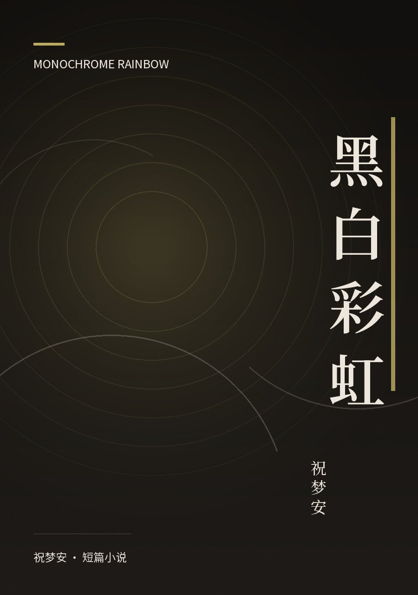
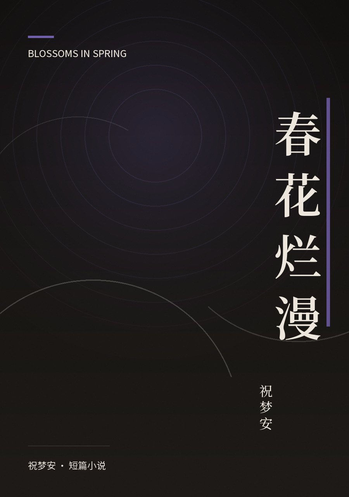
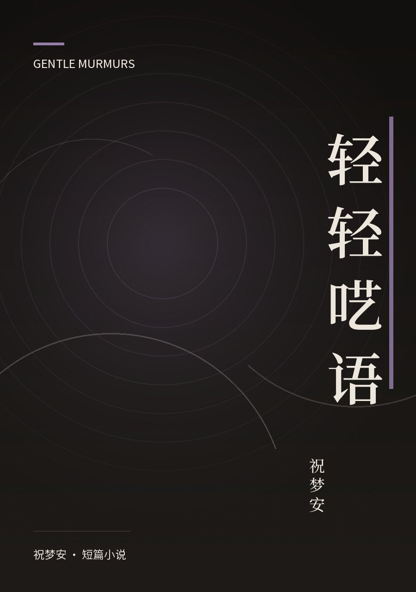
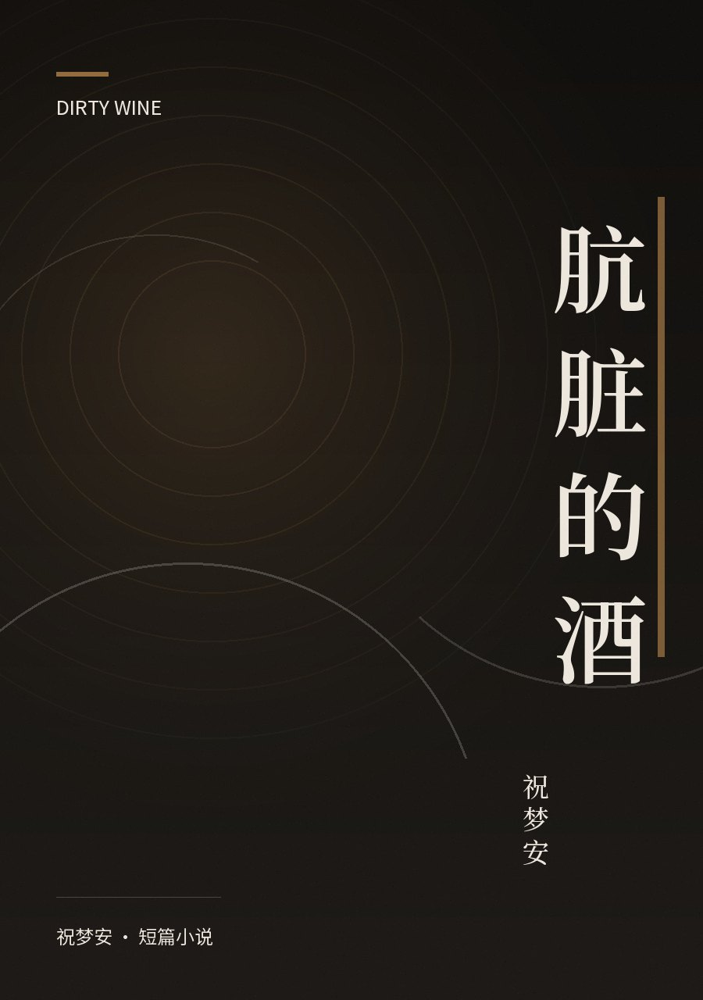

全部作品
7 篇 · 36 章节 · 约 30,491 字

黑白彩虹
课上，她给黑白打印的彩虹涂色，少一支紫笔，他递了过去。她叫谢欢愉，一天补五节课，成绩仍烂；他叫梦安，看不惯两点一线的生活。她住进老破小，母亲卖房孤注一掷。两人渐渐熟络，他却不知她备着伤口贴是因为挨打。她突然说，明晚我家楼下见。

春花烂漫
补课班里转来一个脸上带痘的女孩，坐我旁边。我以为她内向，她却先开了口，笑得像含着太阳。后来我发现自己和她一样心思细腻——她考试失利会难过，却总能很快调整，奔赴下一场；而我的细腻全用在内耗上，别人一个眼神就困住我。她的笑我记了两年，可我想走近她时，总隔着一层什么。

轻轻呓语
“你还记得你小时候的梦想吗？”“我说过这话吗？”咖啡馆落地窗前，两个女孩写着作业，母亲们谈论房价与重高。金盏想和心晴一起当作家，可练习册、补课班、撕碎的复赛通知书挡在面前。她只能在好友送的本子上偷偷写，把梦话藏进字里。窗外彩虹转瞬即逝。

廉价咖啡因
“一块钱不到就能买一包。”她咬开橙红色的包装袋，把黑色液体倒进水里。两个少女在深夜出逃，靠廉价咖啡因确认心脏还在跳。她在学校被孤立、被泼墨水，却只说“你是我唯一的朋友”。咖啡是她的血液，是唯一能推动她活着的东西——可它太便宜，也太容易得到。

找到她的心脏
“什么是喜欢？”她问文具店老板。老板笑了：“喜欢就是喜欢啊。”安染没有心脏——老师说人有了心才懂情感，可她只爱画画，从不画人。父母彻夜的争吵声中，她攒钱买下那套画笔；校园角落里，只有予安每天递来一袋热牛奶。当喜欢这个词反复被追问，某个雨天，亭子下递出又缩回的信封，让她第一次觉得眼眶发湿。

肮脏的酒
“离我远点，身上一股酒味。”十四岁的白铃兰被母亲交给父亲照看，深夜却被他拉去陪客户吃饭。包厢里烟酒呛人，发福的张总对她言语轻佻，父亲只陪笑递酒。她想走，走不了；想喊，被按住。母亲说过，酒是脏东西，没出息的人才碰。可父亲正一杯杯灌下去，手在抖，脸通红，还要她叫伯伯好。她盯着碗里的饭，第一次讨厌呼吸。

近墨者黑
“你还有脸要零花钱？”筷子一摔，门砰地关上。初中生章彤受够了母亲的唠叨，觉得这个家根本不懂她。她和好友曹鑫形影不离，逃课补妆、追学长、网恋官宣，把日子过得热闹又空洞。唯独好友陈欢梦多劝了一句，她便觉得被冒犯。母亲、老师、朋友，一道道目光都拦在她身前，她却只想往外冲。
作品一览
字数按正文统计，不含标点空白
| # | 篇名 | 类型 | 字数 | 章节 | 阅读 |
|---|---|---|---|---|---|
| 01 | 黑白彩虹Monochrome Rainbow | 校园 · 温柔 | 3,421 | 5 节 | 8 min |
| 02 | 春花烂漫Blossoms in Spring | 校园 · 家庭 | 3,542 | 5 节 | 8 min |
| 03 | 轻轻呓语Gentle Murmurs | 成长 · 双线 | 3,231 | 6 节 | 8 min |
| 04 | 廉价咖啡因Cheap Caffeine | 都市 · 对话体 | 7,978 | 17 节 | 19 min |
| 05 | 找到她的心脏Finding Her Heart | 成长 · 抒情 | 8,028 | 1 篇 | 19 min |
| 06 | 肮脏的酒Dirty Wine | 现实 · 家庭 | 2,072 | 1 篇 | 5 min |
| 07 | 近墨者黑Near Ink, Black | 校园 · 写实 | 2,219 | 1 篇 | 5 min |